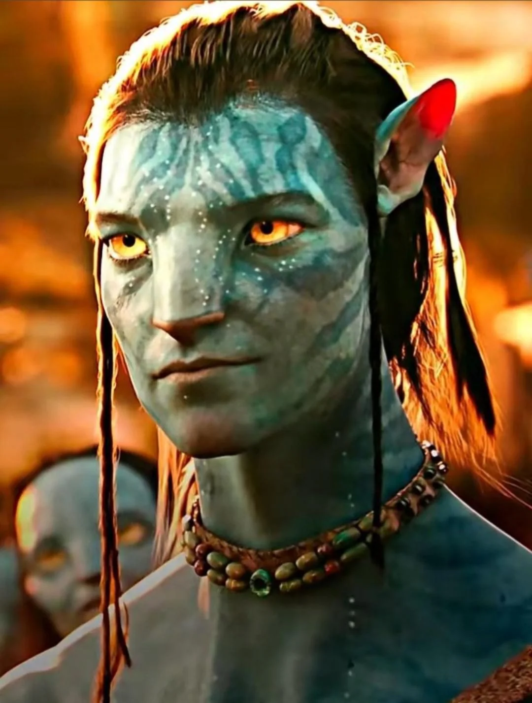
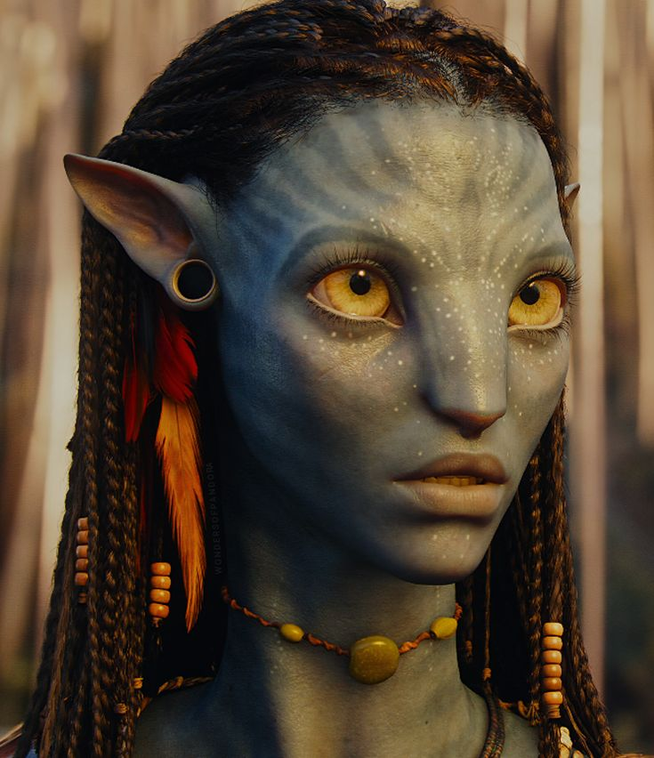
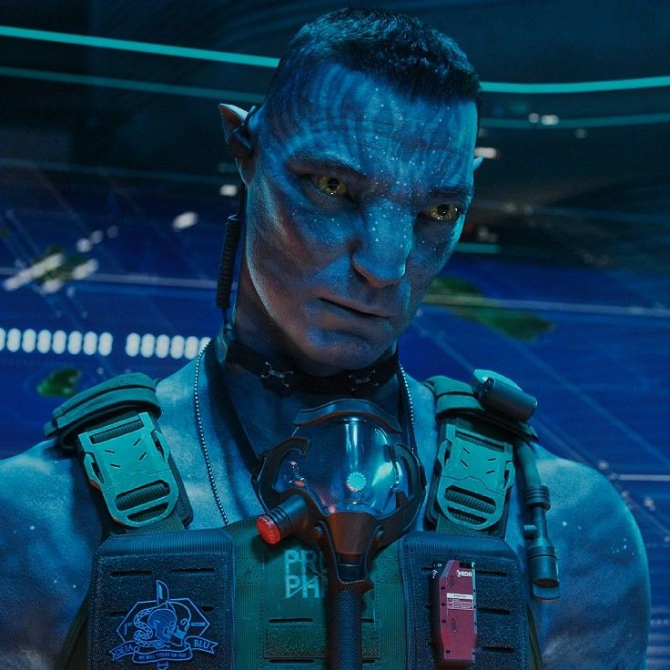
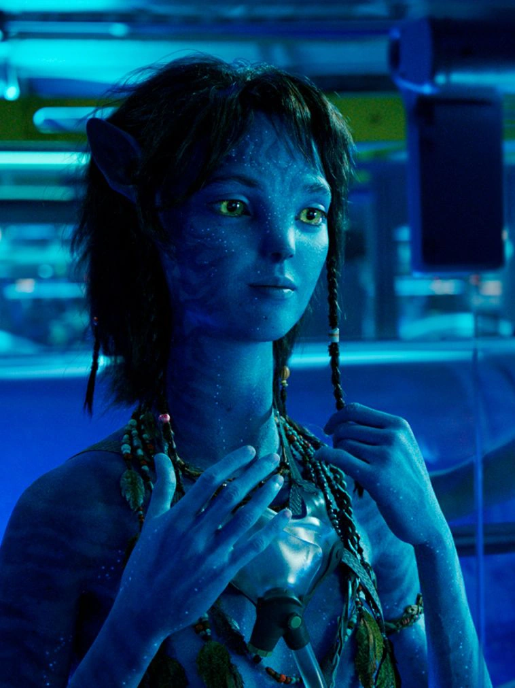
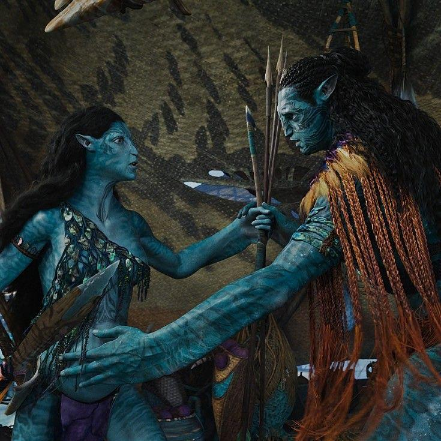

Jake Sully
Especie: Humano / Na'vi (ex-marine) Clan / Bando: Omatikaya / Resistencia Na'vi Rol: Protagonista principal, líder de la resistencia (Toruk Makto) y patriarca de la familia Sully. Habilidad clave: Estrategia militar humana combinada con el dominio del combate y la agilidad Na'vi.

Neytiri te Tskaha Mo'at'ite
Especie: Na'vi Clan: Omatikaya Rol: Guerrera experta, cazadora y consorte de Jake Sully. Habilidad clave: Dominio excepcional del arco, combate cuerpo a cuerpo y una conexión espiritual profunda con Eywa.

Coronel Miles Quaritch
Especie: Humano / Recombinante (Avatar) Clan / Bando: RDA (Recursos del Desarrollo Administrativo) Rol: Antagonista principal. Líder militar enfocado en erradicar a la resistencia Na'vi y someter Pandora. Habilidad clave: Tácticas militares avanzadas, manejo de armamento pesado e intolerancia

Kiri
Especie: Na'vi (hija biológica del avatar de la Dra. Grace Augustine, adoptada por Jake y Neytiri) Clan: Omatikaya / Metkayin Rol: Hija adoptiva con una sensibilidad especial hacia el entorno bioluminiscente de Pandora. Habilidad clave: Conexión espiritual única y directa con la red biológica de Eywa y la fauna marina.

Ronal y Tonowari
Especie: Na'vi (Subespecie de arrecife) Clan: Metkayina Rol: Líderes del clan del océano (Tsahìk Ronal y Olo'eyktan Tonowari). Habilidad clave: Adaptación completa a la vida marina, control del agua y alianza con los Tulkun (criaturas cetáceas inteligentes).